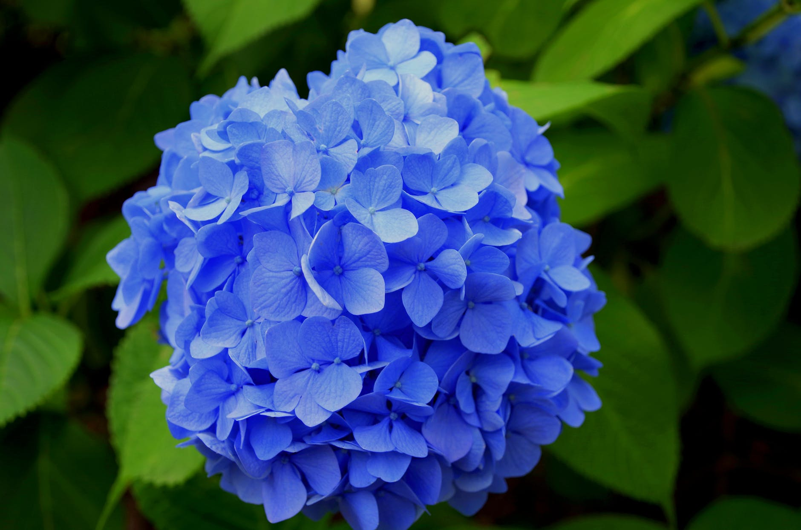
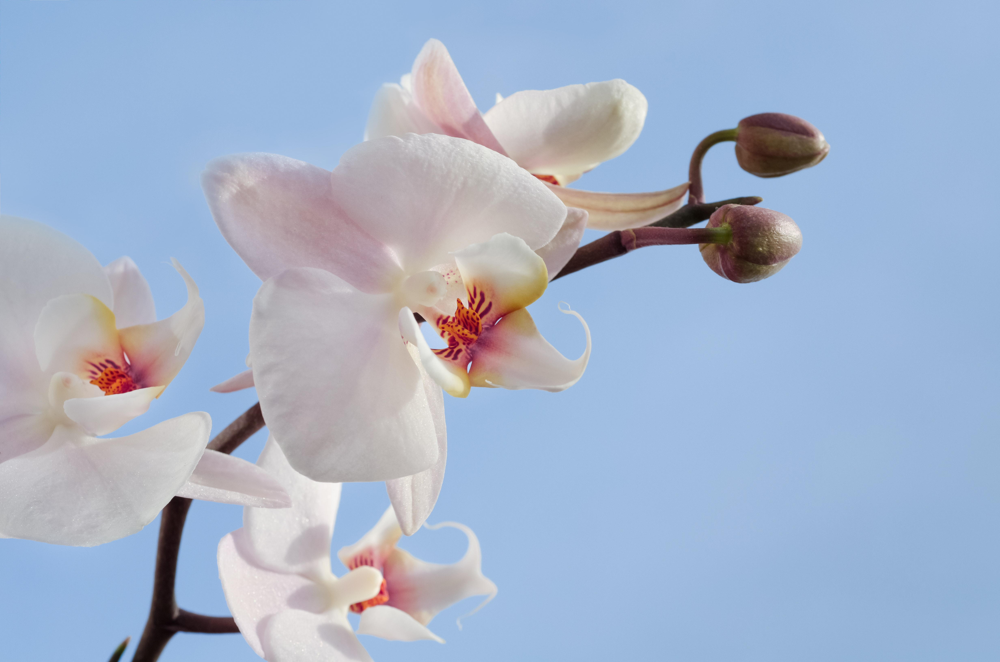
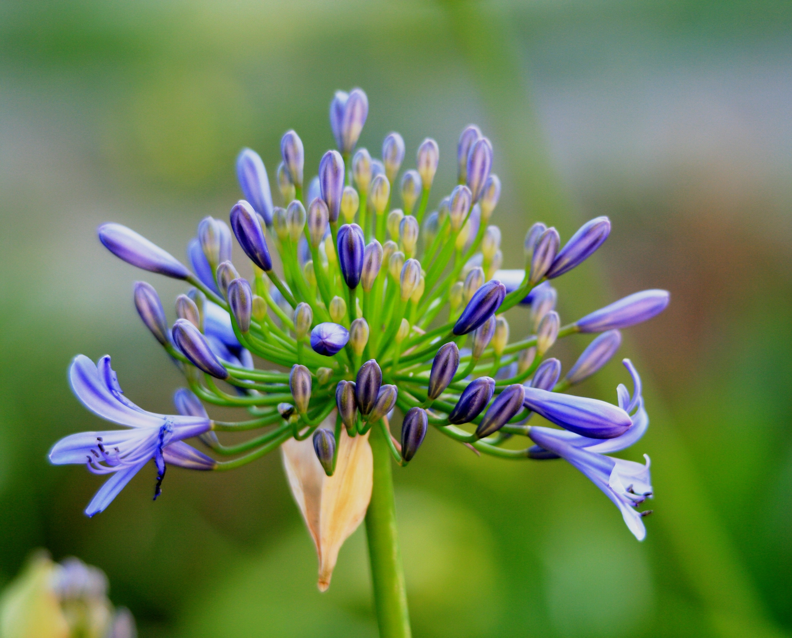

Summer
Break out the coolers, the fans, and your sunhats. Summer has reared it's heatstricken head.
The kids are out of school, and so will you in the garden under the bruising heat when it comes to upkeep for your summer plants.
Summer Varieties
Some popular summer flowers include:
- The famous sunflower, which is actually made of several smaller flowers.
- The colorful enigma of a flower, hydrangea.
- The picky, master level plant, orchid.
- The tender agapanthus, or the lily of the nile.




The hot days of summer may make the upkeep on your lawn long and arduous, but a well worked garden is a happy garden, and a happy garden is a happy you.
All pictures courtesy of pexel.